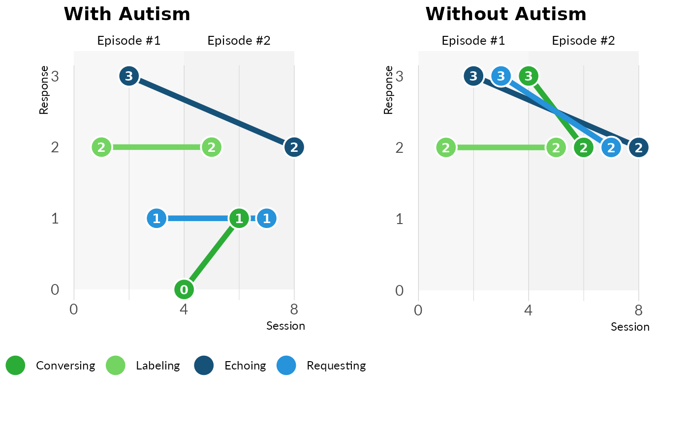
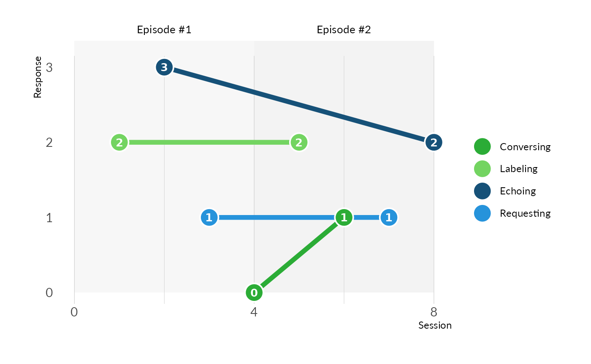

VOX Visualizations and Metrics
datavizandcharts.RmdNote: This page is in the process of being written. Some sections may be incomplete. Apologies for any confusion. We expect this page to be finished in the next two weeks.
Introduction
The voxanalysis packages provides many distinct data
visualizations and measures of variability to assist a user in
diagnosing a speaker with autism spectrum disorder.
This article provides descriptions for the various measures, data visualizations, and tables used in VOX Analysis. It also provides (as an extra resource) instructions for R users to produce these resources individually without the report.
A user can generate a summary report with these measures, data
visualizations, and tables using the Shiny application or the
util_generate_word_doc_report function. Instructions for
generating a report can be found here.
Using the {voxanalysis} Package Directly
Though the VOX Application is the recommended way for users to generate reports, R users can generate the same statistical measures, data visualizations, and tables found in the reprot using the voxanalysis package directly.
The package’s R functions use the following prefixes:
calc_, which returns a vector or list with the measure of interest
plot_, which returns a data visualization
table_, which returns a data.frame
Area Q Plot
The Area Q plot shows X….
Down below are two Area Q plots showing a speaker with and without autism. The one on the left is a speaker with autism, because there is a balance between the four response types. The speaker with autism shows is not as strong in conversing and requesting with the listener.

An R user can generate Area Q Chart using the
plot_area_q function. The function requires a
data.frame called df_summarized_response that
follows the Summary
Data data model. An example of this data.frame can be
seen with data("df_summarized_response_example").
Note that this function can accept only two distinct
date_of_evalution entry inside
df_summarized_response. The user will need to set the
date_primary parameter in plot_area_q to a
specific date_of_evaluation if there are more than two
unique date_of_evaluation.
See ?plot_area_q and
?df_summarized_response_example for more details.
library(dplyr)
data("df_summarized_response_example")
df_summarized_response <- df_summarized_response_example %>%
slice_max(order_by = date_of_evaluation, n = 2)
plot_area_q(
df_summarized_response,
date_primary = max(df_summarized_response$date_of_evaluation) # use date_primary to determine darker color on plot
)Area Q Metrics
Note: further documentation is needed
The Area Q plot can be supplemented by additional metrics:
- Centroid, need definition or description
- Centroidal Distance, need definition or description
- Moment of Area Q, need definition or description
The results for these calculations vary based on whether a speaker has autism.
| Measure | With Autism | Without Autism |
|---|---|---|
| centroid | (1.33, -2.67) | (-0.67, 0) |
| distance | 3 | 1 |
| moment | 648 | 1980 |
An R user can generate the Area Q Metrics using the
calc_centroid function. The function requires a
data.frame called df_input_response that
follows the Speaker
Data data model. An example of this data.frame can be
seen with data("df_input_response_example").
Note that this function can accept only one distinct
date_of_evalution entry inside the
df_input_response.
See ?calc_centroid and
?df_input_response_example for more details.
data("df_input_response_example")
calc_centroid(df_input_response = df_input_response_example)VOX Line Chart
The VOX line chart shows…
Down below shows the VOX line chart for two speakers, one with autism and one without.

An R user can generate the VOX Line Chart using the
plot_vox_line function. The function requires a
data.frame called df_input_response that
follows the Speaker
Data data model. An example of this data.frame can be
seen with data("df_input_response_example").
Note that this function can accept only one distinct
date_of_evalution entry inside the
df_input_response.
See ?plot_vox_line and
?df_input_response_example for more details.
# Load example data
data("df_input_response_example")
# Generate a VOX line chart across verbal episodes
plot_vox_line(
df_input_response = df_input_response_example,
ind_hide_heading = FALSE,
ind_doc_version = FALSE)
VOX Pie Chart
The VOX pie chart shows…
Down below shows the VOX pie chart for two speakers, one with autism and one without. The speaker in the left chart shows an imbalance in their response types. They are strong in echoing and labeling, but weaker in conversing and requesting. The speaker on the right has more balance in language development.
An R user can generate VOX Piechart using the
plot_vox_piechart function. The function requires a
data.frame called df_summarized_response that
follows the Summary
Data data model. An example of this data.frame can be
seen with data("df_summarized_response_example").
Note that this function can accept only one distinct
date_of_evalution entry inside the
df_summarized_response.
See ?plot_vox_piechart and
?df_summarized_response_example for more details.
# Load and transform df_input_response_example
data("df_input_response_example")
df_summarized_response <- util_summarize_response(df_input_response_example)
### Alternatively
# data("df_summarized_response_example")
# df_summarized_response <- udf_summarized_response_example
# Generate the VOX pie chart
plot_vox_piechart(
df_summarized_response = df_summarized_response)Speaker’s SCoRE
The Speaker’s SCoRE is…
The Speaker’s SCoRE provides a measure with the
plot_vox_piechart.
Down below, there is a Speaker’s SCoRE for a speaker with autism and a speaker without autism.
| With Autism | Without Autism |
|---|---|
| 0.6 | 0.92 |
An R user can generate Speaker’s SCoRE using the
calc_speakers_score function. The function requires a
data.frame called df_summarized_response that
follows the Summary
Data data model. An example of this data.frame can be
seen with data("df_summarized_response_example"). Note that
this function can accept only one distinct
date_of_evalution entry inside the
df_summarized_response.
See ?calc_speakers_score and
?df_summarized_response_example for more details.
# Load and transform df_input_response_example
data("df_input_response_example")
df_summarized_response <- util_summarize_response(df_input_response_example)
### Alternatively
# data("df_summarized_response_example")
# df_summarized_response <- df_summarized_response_example
# Calculate the Speaker's SCoRE
calc_speakers_SCoRE(df_summarized_response = df_summarized_response)Cochran’s Q Test Table
Cochran’s Q Test…
Down below are Cochran’s Q Test metrics for a speaker with autism and a speaker without autism.
| Measure | With Autism | Without Autism |
|---|---|---|
| Cochran’s Q | 7.5000 | 0.8200 |
| Chance-corrected R | 0.1875 | -0.0952 |
| P-value | 0.0600 | 0.8500 |
An R user can generate the Cochran’s Q Test using the
table_cochrans_q_test function. The function requires a
data.frame called df_input_response that
follows the Speaker
Data data model. An example of this data.frame can be
seen with data("df_input_response_example"). Note that this
function can accept only one distinct date_of_evalution
entry inside the df_input_response.
See ?table_cochrans_q_test and
?df_input_response_example for more details.
# Load example response data
data("df_input_response_example")
# Generate a summary table with Cochran's Q test and supporting statistics
table_cochrans_q_test(df_input_response = df_input_response_example)Hierarchy Table
The Hierarchy Table is…
The table below shows a speaker with autism. The clinician would start an intervention by focusing on…
| Percent | Conversing | Labeling | Echoing | Requesting |
|---|---|---|---|---|
| 100.0 | CELR | LERC | ELRC | RELC |
| 91.7 | - | LER | ELR | REL |
| 83.3 | CEL | LEC | ELC | - |
| 75.0 | - | LE | EL | - |
| 66.7 | CER | - | ERC | REC |
| 58.4 | - | - | ER | RE |
| 58.3 | CLR | LRC | - | RLC |
| 50.0 | CE | LR | EC | RL |
| 41.7 | - | - | E | - |
| 41.6 | CL | LC | - | - |
| 33.3 | - | L | - | - |
| 25.0 | CR | - | - | RC |
| 16.7 | - | - | - | R |
| 8.3 | C | - | - | - |
An R user can generate the Prompt Hierarchy using the
table_prompt_hieararchy function. The function requires a
data.frame called df_summarized_response that
follows the Summary
Data data model. An example of this data.frame can be
seen with data("df_summarized_response_example").
Note that this function can accept only one distinct
date_of_evalution entry inside the
df_summarized_response.
See ?table_prompt_hieararchy,
?df_summarized_response_example, and
?util_summarize_response for more details.
# Load example data
library(dplyr)
data("df_summarized_response_example")
# Filter to a single evaluation date, as the table works with one date at a time
dat <- df_summarized_response_example %>%
filter(date_of_evaluation == max(date_of_evaluation))
# Generate the prompt hierarchy table
table_prompt_hierarchy(df_summarized_response = dat)